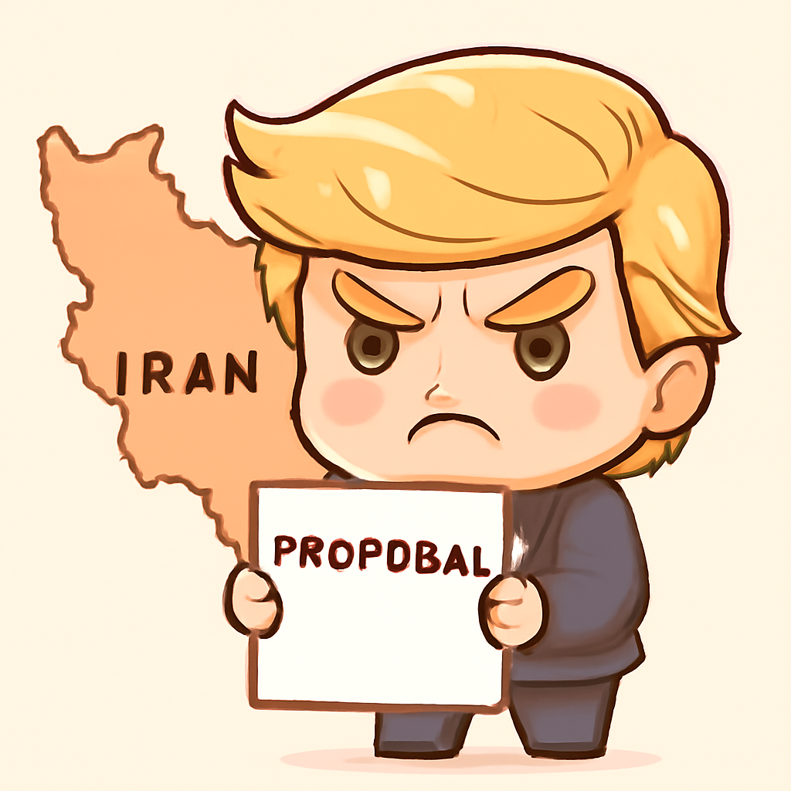
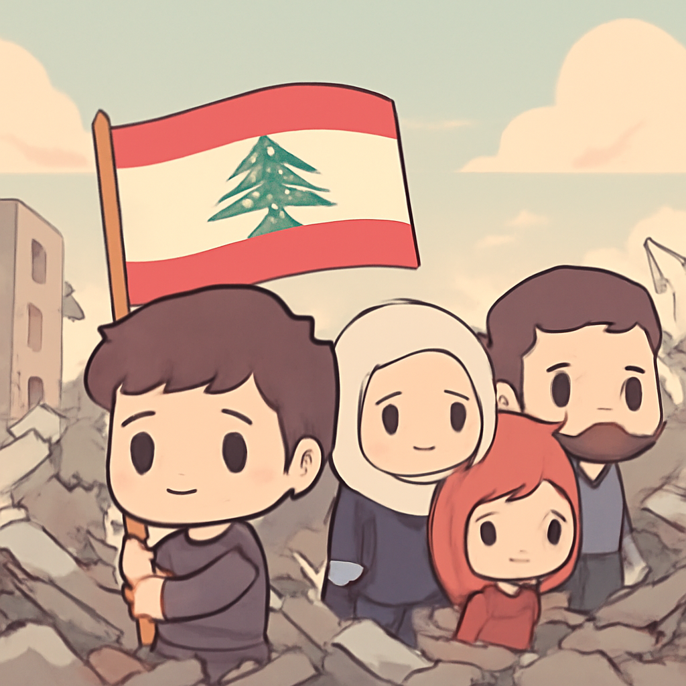
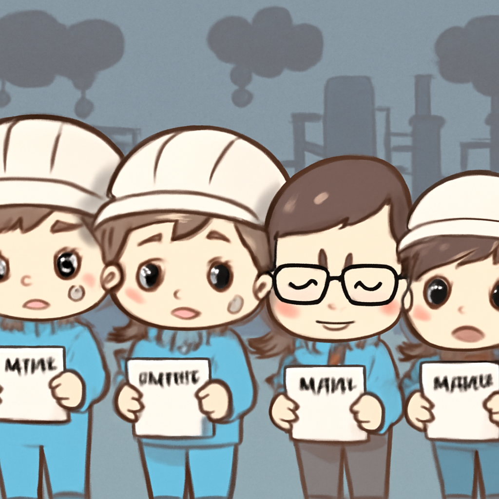

其一 · 伊朗 · 特朗普對伊朗回應表示「完全不可接受」
特朗普對伊朗回應不滿，談判仍在進行中。

在伊朗，特朗普對伊朗對美國提議結束戰爭的回應表示「完全不可接受」。這一回應使得雙方的和平談判變得更加複雜，兩國在30天的停火延長和霍爾木茲海的重新開放上仍未達成共識。看來這場外交拔河賽，大家都不打算讓步。
🔗 原始新聞 ↗
2026-05-11 · 以古觀今，以笑抗愁
特朗普對伊朗回應不滿，談判仍在進行中。

在伊朗，特朗普對伊朗對美國提議結束戰爭的回應表示「完全不可接受」。這一回應使得雙方的和平談判變得更加複雜，兩國在30天的停火延長和霍爾木茲海的重新開放上仍未達成共識。看來這場外交拔河賽，大家都不打算讓步。
🔗 原始新聞 ↗
以色列空襲黎巴嫩，造成39人喪生。

最近在以色列與黎巴嫩的衝突中，黎巴嫩官員報導稱以色列的空襲造成39人死亡，這些事件使得原本脆弱的停火協議再次受到威脅。這場衝突不斷升級，讓人不禁想問：這場火力全開的戰爭，何時才會結束呢？
🔗 原始新聞 ↗
英國軍方空降偏遠島嶼，處理健康危機。
在英國的特里斯坦達庫納島，因疑似漢他病毒病例，英軍專業團隊迅速空降到當地，提供醫療支援。這種偏遠島嶼的情況讓人想起那些僻靜的度假地，不過這次可不是度假，而是救援行動！
🔗 原始新聞 ↗
普京認為烏克蘭衝突有望結束，談判可能重啟。
在俄羅斯，普京表示他認為烏克蘭衝突「即將結束」，並對西方對澤倫斯基的支持表示譴責。這個消息雖然讓人稍感振奮，但在持續的戰鬥與談判之間，依然存在著許多不確定性。希望和平早日降臨，讓所有人都能安心入睡。
🔗 原始新聞 ↗
伊朗因戰爭壓力，企業大量裁員。

隨著戰爭壓力加大，伊朗的企業面臨重重困境，許多企業被迫進行大規模裁員，這使得本已脆弱的經濟更加雪上加霜。這一情況提醒我們，戰爭的影響不僅限於戰場，還波及到每一個生活在這裡的人。希望未來能有更好的經濟政策，讓民眾的生活能夠好轉。
🔗 原始新聞 ↗